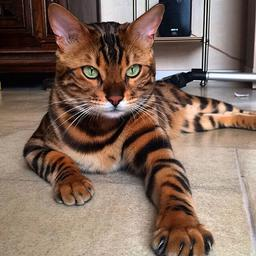

bengala

El bengalí es una raza de gato doméstico desarrollada para parecerse a los felinos salvajes exóticos tales como son los leopardos, ocelotes, margays, etc. El gato bengala, fue un resultado fortuito del cruce casual entre un gato doméstico y una hembra gato leopardo (Prionailurus bengalensis).